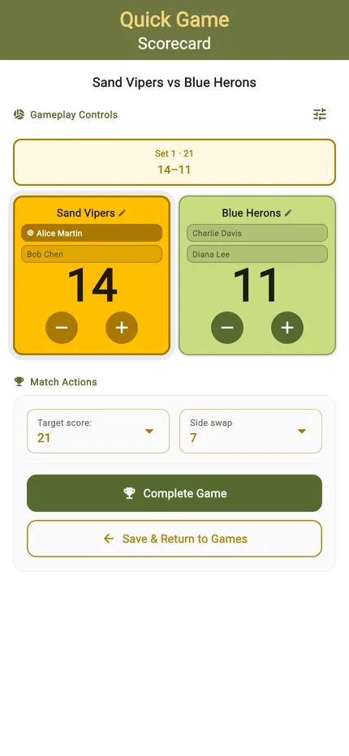
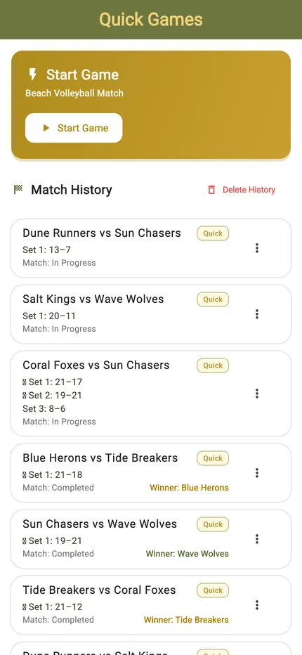
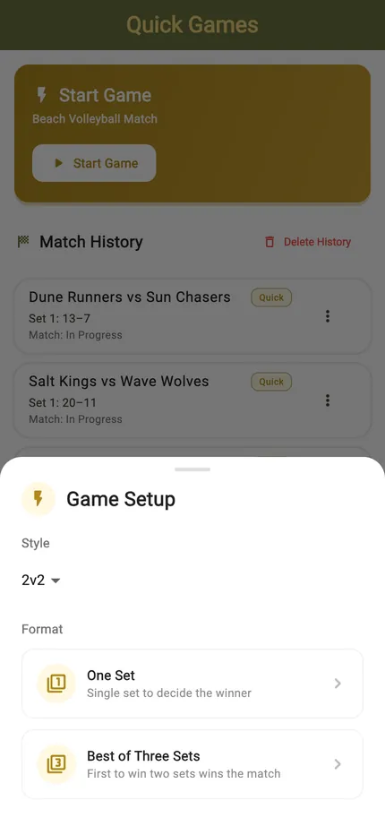
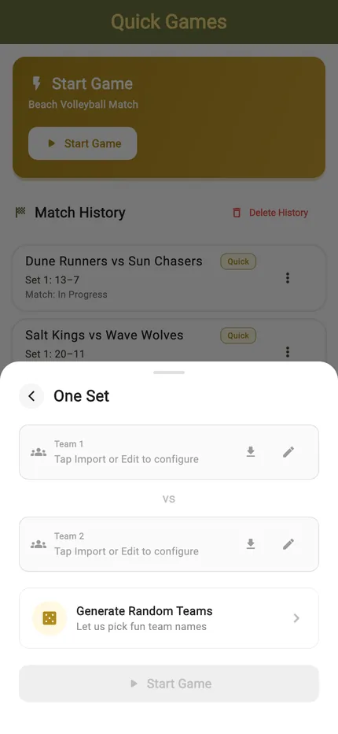
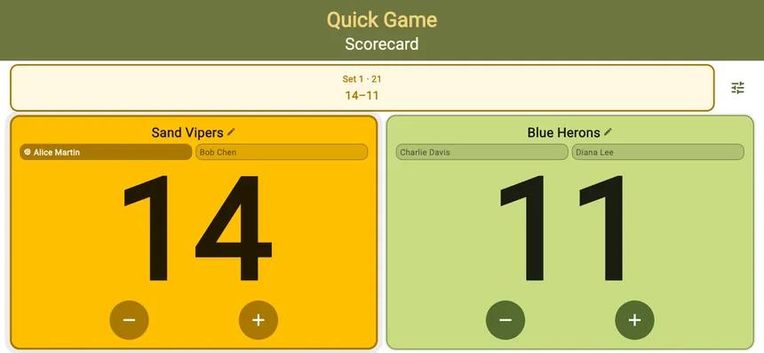
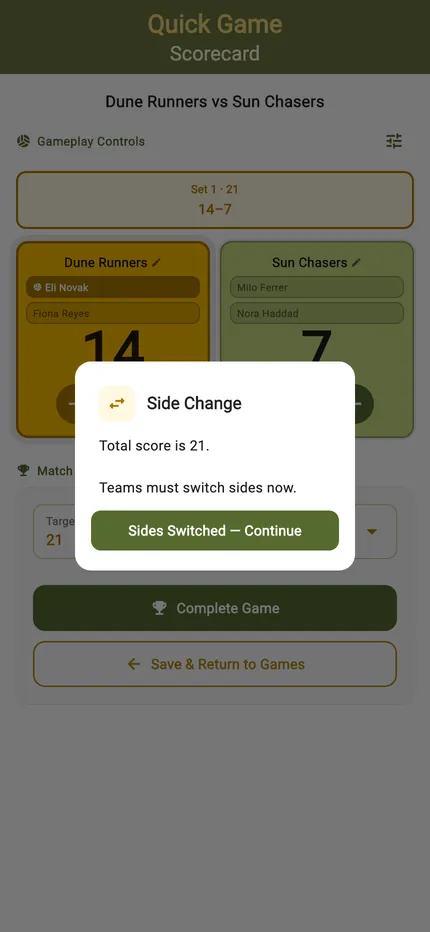
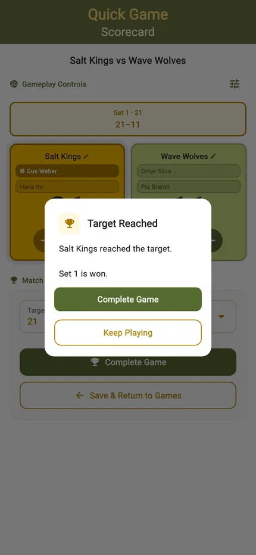
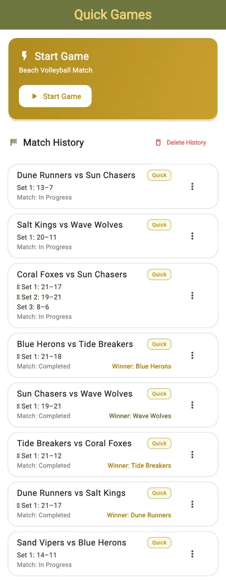

Quick Game

Sometimes there is no tournament. Two teams, one match, and nobody wants to spend ten minutes setting things up first.
Name the sides or let TournaQ generate them, pick a target score if you care, and start. Points, sets, serve and side changes are all tracked, and the finished match lands in your history with the full score for every set.
Best for
- A single match where a tournament would be overkill
- Training games where you just want the score kept honestly
- Trying the app out before running a real session
Finding it in the app
Quick Games sit at the top of the TournaQ Arena, above the tournament formats. The list keeps every match you have scored.

The Arena
Every format the app can run, grouped by the kind of session it suits. The number on a card is how many of those you have run.

Your matches
Every game you have scored, most recent first, with the final score and the date. Tap one to see the full set-by-set result.
Starting a match
One sheet, and most of it is optional. The only thing you truly need is two team names — and TournaQ will invent those if you want.

The quick start sheet
Target score, number of sets, and who serves first. Leave them alone and the defaults are a normal game; change them and the scorecard follows.
There is no schedule to build and no players to register — this is the shortest path in the app between opening it and keeping score.

Name the sides, or don't
Type the two team names, pull in a pair you have saved, or tap generate and let TournaQ name them. It is the difference between starting now and starting in a minute.
Scoring the match
Built for one hand at the side of a court: big targets, the serving side marked, and undo for when the call goes the other way.
Portrait
Tap a side to award the point. The server is highlighted, service passes automatically when the other side scores, and the set score sits above the running total.
Landscape
Turn the phone and the same controls rearrange for a net post or a table at the side of the court. Nothing is hidden — the layout changes, the functions do not.

Change ends
When the combined score reaches the side-change point TournaQ says so and swaps the counters for you, so the scoreboard still matches which side of the net each team is standing on.

Finishing and keeping it
The match ends itself when someone reaches the target, and what happened is kept on the device without you saving anything.

Game won
Reach the target and TournaQ calls it, showing the final score for the set and the match. Nothing is submitted anywhere — the result is simply recorded on the phone that kept it.

Your history
Every finished match stays in the list with the full score for each set, so a disagreement about last Tuesday has an answer. It works with no signal, because nothing ever left the device.
Start to finish
- Open the TournaQ Arena and tap Quick Games.
- Tap New Game.
- Name the two sides, or tap generate.
- Set a target score and number of sets if you want something other than the default.
- Start the match.
- Tap a side to award each point; undo takes back the last one.
- Change ends when TournaQ prompts — the counters swap themselves.
- The match ends when a side reaches the target.
- The result is saved to your history automatically.
Have a question about Quick Games, spotted something missing, or want to suggest an improvement?